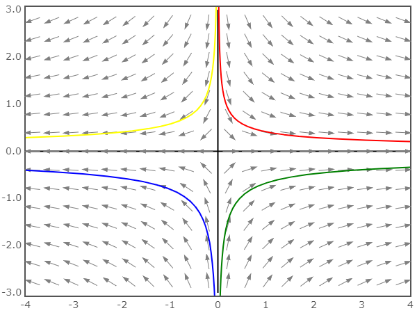

看相图_相轨迹 的笔记
需要注意的是，下文中所有的x,y,X,Y 都是关于时t 的变量，而这里的y,Y 也不是状态空间方程里的Y
一般在求解微分方程（组）的时候，我们可以选择两种方法：解析法和数值法。在此之外，我们还有另外一种方案，即绘制向量场图，也被称为相轨迹图：
上图是关于微分方程组{x˙=y−0.5xy˙=sin(x)的相轨迹图，其横坐标为x，纵坐标为y，箭头的代表两个变量随时间的流动方向。例如取A 初始位置在(-2,1) 化，A 会沿绿色曲线流动。
一维相轨迹图
以f(x)˙=x 为例，假设上图中横坐标是x，纵坐标是x˙，红色的曲线与横轴交于左右两点。
为了观察方便，我们未必会将时间t 作为坐标轴，只要能观察到变量x,x˙ 随时间变化的趋势就好了。
- 在左边交点x1的左侧，x˙>0，表示x 随着时间的增加会向右移动，直到达到x1。此时变化率为0，达到稳定状态
- 在左边交点x1的右侧，x˙<0，表示x 随着时间的增加会向左移动，直到达到x1。此时变化率为0，达到稳定状态
- 在右边交点x2的左侧，x˙<0，表示x 随着时间的增加会向左移动，逐渐远离x2。
- 在右边交点x2的右侧，x˙>0，表示x 随着时间的增加会向右移动，逐渐远离x2。
二维相轨迹图
同理，对于包含两个变量x1,x2 的方程组[x1˙x2˙]=[acbd][x1x2]，令b=c=0，则有：
x1˙=ax1x2˙=bx2
-
当a=d>0 时，如下图所示,横坐标是x1，纵坐标是x2。无论起始位置在哪儿，都会远离原点，故不会稳定：
-
当a>d>0 时，如下图所示,横坐标是x1，纵坐标是x2。因为a 更大，所以横方向上变化更快，但不会改变远离原点的趋势，故不会稳定：
-
当a>0,d<0 时，如下图所示,横坐标是x1，纵坐标是x2。横方向上发散，纵方向收敛，但整体会远离原点，故不会稳定：

-
当a<0,d<0 时，如下图所示,横坐标是x1，纵坐标是x2。横方向上收敛，纵方向收敛，系统是稳定的：
上面前两种情况中，原点被称为源点（source）是不稳定的；第三种情况被称为鞍点（saddle）也是不稳定的；最后一种被称为汇点（sink）。
更一般的情况
X˙=AX(1)
令P=[v1v2],X=PY,Y˙=ΛY，以x˙=[−3−243]X为例：
- 求矩阵A 的特征值，得Λ=[100−1]
- 求矩阵A 的特征向量，得[v1v2]=[1121]=P
- 计算Y˙=[100−1]Y,X=[1121]Y
- 对于Y 来说，其a>0,d<0 属于鞍点，是不稳定的
- 对于X 来说，相当于对Y 的坐标轴进行了线性变换，坐标轴从y1,y2 变成了x1,x2，函数图像有了些许拉伸或压缩，但是不会改变稳定性
- 所以可以通过Λ 判断系统的稳定性（这里建议看视频）
虚部引入了震荡~
相轨迹图的应用